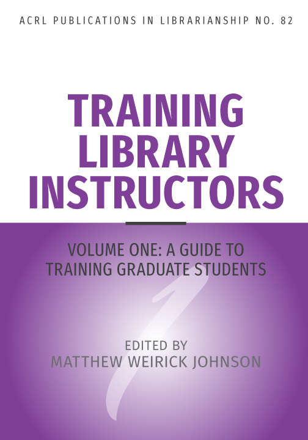
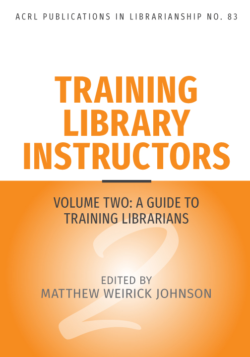

Buy the Books


Purchase the books from the ALA Store:
Some chapters are available through the authors’ institutional repositories. Links are included below where applicable.
Vol 1: A Guide to Training Graduate Students
Table of Contents
Acknowledgments
Introduction
Teaching & Learning in the LIS Curriculum: Theory, Practice, and Need
- Practice Theory in Information Literacy
Logan Rath - Library Instruction Training and the MLIS: A Review of the Literature
Matthew Weirick Johnson
Case Studies
- Using Teaching Demonstrations in LIS Instruction Courses
Melissa A. Wong - Teaching Instruction Librarians by Design
Dominique Turnbow & Amanda Roth - From Intern to Instructor: Training to Teach With Primary Sources
Rachel Makarowski & Maureen Maryanski - Empowering Library Instructors: Reflections on the Information Literacy Scholars Program at Syracuse University Libraries
Kelly Delevan, Breeann Austin, Brie Baumert, Rebecca McCall, Lauren Quackenbush, Olivia Russo, Alayna L. Vander Veer, and B. Austin Waters - Introducing Emerging Library Instructors to Information Literacy Instruction through Programmatic Instruction
Alicia G. Vaandering, Amanda Izenstark, Colin Braun, Erin Cunningham, Reina Kirkendall, and Laura Marasco
Reflections: LIS Instruction Training
- Creating My Own Experience: Navigating a Library Graduate Program to Become an Instruction Librarian
Kala Dunn - The Impact of a Graduate Assistantship and Optional Courses on Becoming a Teaching Librarian
Chrissy O’Grady - From Learner to Teacher: Preparing for the Library Instruction Classroom and Fostering Teacher Identity Through Information Literacy Coursework
Kaci Wilson - From Library Science Student to Instruction Librarian: Using the Science and Art of Teaching to Grow as an Instruction Librarian
Mark W. Duncan
Reflections: Non-LIS Instruction Training
- Benefits of An Elementary School Teaching Background
Amber Owrey - Thoughts from a Teacher Librarian: Utilizing Training as a Teacher to Become an Instructional Librarian
Ella Gibson - Adjusting Roles: Lessons Learned from Applying Non-LIS Teacher Training to Library Instruction
Jeremiah R. Mercurio
Conclusion: Advancing Teaching & Learning in the LIS Curriculum
Vol 2: A Guide to Training Librarians
Table of Contents
Acknowledgements
Introduction
Case Studies: Continuing Training for Library Instructors
- Developing Library Instructors Together: A Case Study from the Hong Kong JULAC Consortium
Victoria F. Caplan, Christopher Chan, Lisa Janicke Hinchliffe, and Eunice S. P. Wong - Increasing Inclusive Instruction: Building a Bespoke In-house Teacher Training Programme at the University of Cambridge
Kirstie Preest & Claire Sewell - Communities of Support: Using the Community of Practice Model for Library Instructor Development
Melissa A. Wong & Laura Saunders
Case Studies: Training New Librarians
- We’re All in this Together: Holistic Approaches to Training New Instruction Librarians
Randi Beem, Marc Bess, Ryan Harris, Abby Moore, Natalie Ornat Bitting, Catherine Tingelstad, and Angel Truesdale - Learning What Works: The Impact of Change on Training New Library Instructors
Josette M. Kubicki, Tonya D. Dority, Thomas C. Weeks, and Emma Kate Morgan
Case Studies: Training New and Experienced Librarians
- Planning for Instruction Training: Implementing an On-the-job Training for Library Instructors
Livia Piotto - Supporting Librarian Teachers: The Learning-Centered Librarian Instruction Program at the University of Victoria
Karen Munro, Cynthia Korpan, Matt Huculak, and Michael Lines - Best of Both Worlds: Training for New and Experienced Library Instructors
David X. Lemmons, Ashley Blinstrub, Kayla M. Gourlay, Maoria J. Kirker, Janna Mattson, and Anna K. Murphy-Lang
Reflections
- The Introverted Instructor: Tackling Library Instruction When It’s Out of Your Comfort Zone
Ginelle Baskin - (Eventually) Learning to Look Before I Leap: Discovering Instructional Design Mid-Career
Nicole Westerdahl - Learning from Each Other: Peer Observation for On-the-Job Library Instructor Development
Alexandra Mitchell - Peer Observation and its Discontents: Using Autotheory to Argue for Focused, Community-Centered Instruction Training
Russel Peterson - It Takes a Village to Raise a Librarian: Reflection on an Unconference Teaching Workshop
Sam Mandani & Fannie Ouyang - Go and Get What You Need!: Seeking Out Mentorship
Jamia Williams